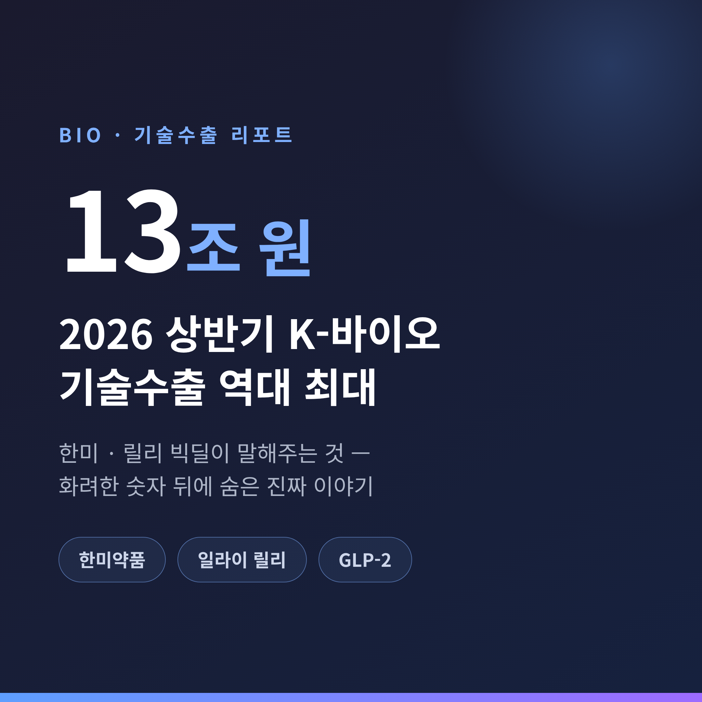
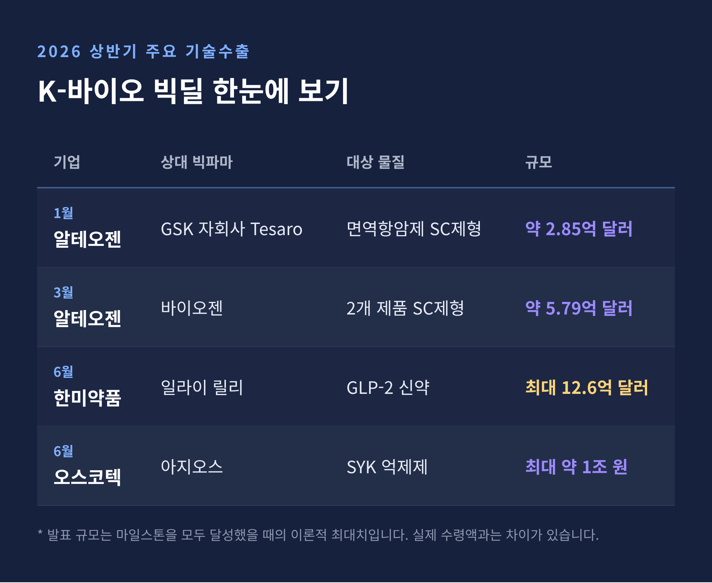
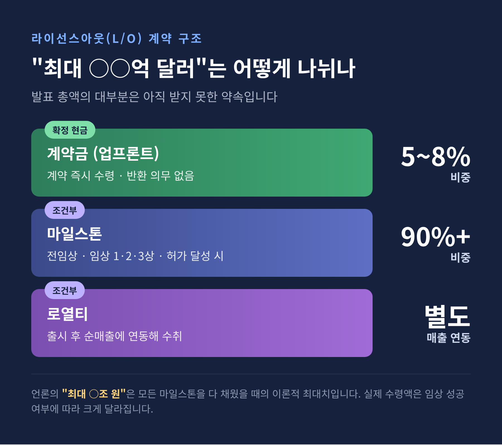
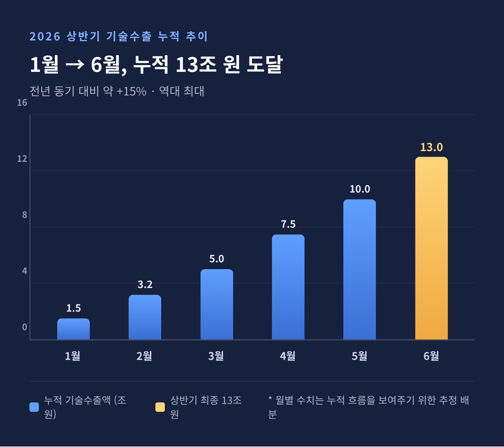

K-바이오 기술수출 2026 상반기 13조 — 한미·릴리 빅딜이 말해주는 것
이번 글에서는 2026년 상반기 K-바이오 기술수출 13조 원이라는 기록을 차분히 정리해 보겠습니다. 숫자만 보면 화려하지만, 그 안을 들여다보면 결이 다른 이야기가 있습니다. 한미약품과 일라이 릴리의 빅딜을 중심으로, 무엇이 진짜이고 무엇을 조심해야 하는지 함께 살펴보겠습니다.
먼저 세 줄로 요약하면 이렇습니다.
- 2026년 상반기 국내 제약·바이오 기술수출 누적은 약 13조 원(85억6675만 달러)으로 역대 최대입니다.
- 한미약품–릴리의 GLP-2 신약 딜이 최대 12억6000만 달러(약 1.9조 원) 규모로 상반기를 상징하는 거래였습니다.
- 다만 발표 총액은 '이론적 최대치'일 뿐, 실제 손에 쥐는 돈은 그보다 훨씬 적다는 점을 함께 보아야 합니다.


기술수출(L/O)이 무엇인지부터
라이선스아웃, 줄여서 L/O라고 부릅니다. 국내 기업이 직접 개발한 신약 후보물질이나 플랫폼 기술의 권리를 글로벌 제약사에 넘기고, 그 대가를 단계별로 받는 계약입니다. 흔히 말하는 '기술수출'과 같은 뜻입니다.
왜 이런 방식을 택할까요.
글로벌 임상 3상에는 수천억 원에서 조 단위의 자금이 듭니다. 실패하면 회사 전체가 흔들립니다. 국내 기업은 자본력이 상대적으로 약합니다. 그래서 끝까지 직접 개발하기보다, 초기나 중기 단계에서 빅파마에 넘기고 안정적인 기술료를 택하는 경우가 많습니다.
빅파마도 손해 보는 장사가 아닙니다. 자체 연구개발만으로는 신약 파이프라인을 다 채우기 어렵습니다. 검증되기 시작한 외부 기술을 사들여 빈자리를 메웁니다.
계약 총액은 한 덩어리가 아닙니다
여기서부터가 중요합니다. 바이오 라이선스 딜의 총액은 보통 세 부분으로 나뉩니다.
첫째, 계약금(업프론트)입니다. 계약이 성사되면 바로 받는 돈입니다. 개발이 중단되거나 기술이 반환되어도 돌려줄 의무가 없습니다. 즉 실제로 손에 쥐는 현금입니다. 다만 전체 총액에서 차지하는 비중은 5~8% 수준에 그칩니다.
둘째, 마일스톤입니다. 전임상, 임상 1·2·3상, 허가, 상업화 같은 단계 목표를 달성했을 때만 받습니다. 발표되는 "최대 ○○억 달러"의 90% 이상이 여기에 해당합니다. 임상이 실패하면 미지급분은 받을 수 없습니다.
셋째, 로열티입니다. 제품이 실제로 팔릴 때 매출의 일정 비율로 받습니다. 두 자릿수 로열티는 우량 딜의 지표로 꼽힙니다.
정리하면 이렇습니다. 언론에 보도되는 "최대 ○조 원"은 모든 마일스톤을 다 채웠을 때의 이론적 최대치입니다. 실제 수령액은 임상 성공 여부에 따라 크게 달라집니다.

상반기 13조 원, 무엇이 채웠나
2026년 상반기 누적 기술수출은 약 13조 원으로 집계됐습니다. 종전 최대였던 2025년 상반기(약 12조 원)를 약 1조 원 앞선 신기록입니다. 전년 동기 대비 약 15% 늘었습니다.
1월 알테오젠을 시작으로 6월 한미약품·오스코텍까지, 상반기 주요 글로벌 기술이전은 총 8건이었습니다.
주요 딜을 정리하면 다음과 같습니다.
- 1월: 알테오젠 → GSK 자회사 Tesaro, 면역항암제 SC제형, 약 2억8500만 달러
- 3월: 알테오젠 → 바이오젠, 2개 제품 SC제형, 약 5억7900만 달러
- 6월 1일: 한미약품 → 일라이 릴리, GLP-2 신약, 최대 12억6000만 달러(약 1.9조 원)
- 6월 1일: 오스코텍 → 아지오스, SYK 억제제, 최대 약 1조 원
6월 1일 하루에 한미약품과 오스코텍의 대형 딜이 동시에 터졌습니다. "단 하루 3조 원 잭팟"으로 보도되기도 했습니다. 다만 이는 두 딜의 발표 총액을 합친 수치이지, 확정된 현금이 아니라는 점은 짚어두겠습니다.
업계에서는 정부가 목표한 '2030년 기술수출 30조 원 시대'가 예상보다 빠르게 올 것이라는 기대가 번지고 있습니다.

핵심 사례 — 한미약품과 릴리의 GLP-2 딜
상반기를 상징하는 거래는 한미약품과 일라이 릴리의 계약입니다.
대상 물질은 바이오신약 후보 '소네페글루타이드'입니다. GLP-2 계열로, 1차 적응증은 단장증후군입니다. 장의 상당 부분이 소실돼 영양 흡수가 어려운 희귀질환입니다. 현재 글로벌 임상 2상이 진행 중이며, 이후 임상은 릴리가 주도하게 됩니다.
여기에는 한미약품 독자 기술인 지속형 플랫폼 '랩스커버리'가 적용됐습니다. 약물의 반감기를 늘려 투약 빈도를 줄이는 기술입니다. 한미는 같은 플랫폼 기반의 임상 단계 후보를 5개 보유하고 있습니다.
계약 금액 구조를 보겠습니다.
- 총액: 최대 12억6000만 달러(약 1.9조 원) — 한미약품 역대 두 번째 규모
- 확정 계약금: 7500만 달러(약 1129억 원) — 돌려줄 의무 없는 현금
- 마일스톤: 최대 11억8500만 달러(약 1조7844억 원) — 단계 달성 시
- 로열티: 출시 후 순매출에 연동해 별도 수취
증권가의 평가도 후합니다. 하나증권은 "시장 기대를 뛰어넘은 서프라이즈 딜"로 봤습니다. 단장증후군이 희귀질환이라 시장 규모가 크지 않은데도 약 1.9조 원에 달한 점을 들어, 추가 적응증 확대 가능성이 계약에 반영된 것으로 추정했습니다. 한미약품으로서는 6년 만의 빅딜입니다.
K-바이오의 무기와 빅파마의 허기
증권가가 2026년에 주목한 분야는 네 가지로 모입니다. 비만·대사질환, 항암(특히 ADC), RNA, 그리고 AI 신약입니다.
비만·대사질환은 전 세계 환자 증가로 수요가 급증하고 있습니다. 릴리·노보 노디스크 같은 빅파마의 GLP-1·GLP-2 수요가 강합니다. 한미약품의 소네페글루타이드가 그 흐름 위에 있습니다.
항암에서는 항체-약물 접합체(ADC)가 앞장섭니다. 하반기 추가 빅딜을 ADC가 이끌 것이라는 전망이 나옵니다.
RNA는 mRNA 백신 이후 차세대 플랫폼으로 떠올랐습니다. 빅파마들이 특허 절벽에 대응하려 RNA로 방향을 틀고 있습니다.
AI 신약 개발은 후보물질 탐색의 시간과 비용을 크게 줄입니다. 전문가들은 일시적 테마가 아니라 산업 구조를 바꾸는 장기 흐름으로 봅니다.
배경에는 빅파마의 사정이 있습니다. 특허 절벽과 약가 인하 압박으로 수익성이 나빠지자, 외부 기술 도입에 적극 나선 것입니다. 같은 시기 한국의 초기 혁신 기술이 잇따라 성과를 내면서 양쪽의 수요가 맞물렸습니다.
화려한 숫자 뒤의 그늘
좋은 이야기만 하면 균형이 맞지 않습니다. 아쉬운 점도 분명히 있습니다.
가장 본질적인 것은 기술 반환 리스크입니다. 들여온 기술의 권리를 임상 실패나 전략 변경으로 원소유자에게 돌려주는 일입니다.
실제 사례가 있습니다. 브릿지바이오는 2019년 베링거인겔하임에 최대 1조5000억 원 규모로 기술수출했습니다. 그러나 이듬해 잠재적 독성 문제로 권리가 반환됐고, 손에 남은 것은 약 600억 원이었습니다. 한미약품도 2015년 사노피에 당뇨병 치료제를 넘겼지만 2020년 반환됐습니다.
통계는 더 냉정합니다. the bell의 분석에 따르면, 8년간 반환된 계약 규모가 약 22조 원에 달했고, 실제 수익은 발표 총액의 약 4% 수준이었습니다. 기술수출의 약 72%가 임상 2상 진입 전 초기 단계에서 이뤄진다는 점도 함께 봐야 합니다. 그만큼 이후 실패 가능성이 큽니다.
다른 시각도 있습니다. 일부 전문가는 "기술이전 금액 자체가 기술력을 인정받았다는 의미이며, 반환이 곧 실패는 아니다"라고 봅니다. 반환된 물질이 보완을 거쳐 다른 곳에 다시 기술이전되는 경우도 있습니다.
여기에 정책 변수도 더해집니다. 트럼프 2기의 핵심은 약가 인하와 공급망 재편입니다. 2026년 4월에는 수입 특허 의약품에 높은 관세를 부과하는 행정명령에 서명했습니다. 국내 기업 대부분이 기술수출·로열티·CDMO 중심의 비직접판매 구조라 직접 타격은 제한적이라는 견해가 있는 반면, 직접 수출과 현지화 비용 부담을 키운다는 우려도 함께 나옵니다.
정리하면 이렇습니다.
13조 원이라는 숫자는 K-바이오의 기술력이 세계 시장에서 통하기 시작했다는 분명한 신호입니다. 다만 그 숫자의 대부분은 '아직 받지 못한 약속'이라는 사실도 잊지 말아야 합니다.
발표된 총액이 아니라, 임상을 끝까지 견뎌 손에 쥐는 금액이 진짜 실력입니다.
상반기의 기록을 어떻게 보아야 하느냐고 물으신다면, 박수는 보내되 숫자는 끝까지 따라가 보자고 답하겠습니다.